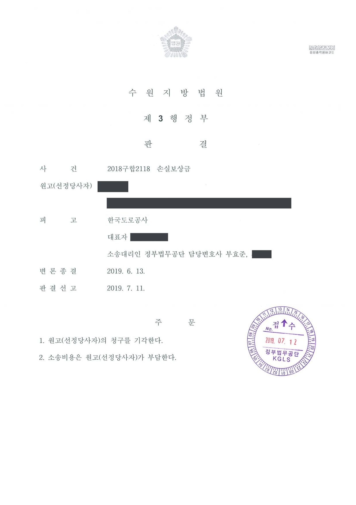

고속도로 수용토지 손실보상금 증액 청구소송
수원지방법원 2018구합2118 · 담당변호사 부효준
판결문

사건의 요지
고속도로 건설사업에 수용된 임야의 공유자들이 수용재결 보상금의 증액을 구한 사건으로, 법원 감정과 재결 감정의 비교 및 보상금 산정의 적정성이 다투어졌습니다.
사건의 주요 내용
사업시행자가 시행한 고속도로 건설공사(2016년 12월 사업인정 고시)에 임야 한 필지가 편입되어 2018년 4월 수용재결이 있었습니다. 수용재결의 손실보상금은 1㎡당 177,500원으로 산정되었고, 이 임야를 공유하던 8명(원고 선정당사자와 선정자 7명)의 지분에 해당하는 보상금은 합계 약 813만 원이었습니다. 공유자들의 이의신청은 2018년 10월 이의재결에서 기각되어 보상금은 그대로 유지되었습니다.
공유자들은 수용재결과 이의재결이 토지의 개별요인과 기타요인을 제대로 참작하지 않았다며 2018년 각자 2,000만 원씩(합계 1억 6,000만 원)의 보상금 증액을 구하는 소를 제기하였습니다. 부효준 변호사는 피고 사업시행자를 대리하였습니다. 법원이 선임한 감정인의 감정 결과는 1㎡당 175,000원으로 수용재결 금액보다 낮았고, 법원은 2019년 7월 원고의 청구를 기각하였습니다.
쟁점
- 수용재결·이의재결 감정과 법원 감정이 모두 평가방법에 위법이 없을 때 어느 감정 결과를 기준으로 정당한 보상금을 정할 것인지
- 법원 감정 결과가 재결 금액보다 낮게 나온 경우 원고가 제출한 증거만으로 보상금 증액을 인정할 수 있는지
원고의 주장
수용재결과 이의재결의 감정평가는 토지의 개별요인과 기타요인을 제대로 참작하지 않아 토지의 적정한 가치를 반영하지 못하였으므로, 원고 선정당사자와 선정자들에 대한 보상금은 수용재결 보상금보다 각 2,000만 원씩 증액되어야 한다고 주장하였습니다.
부효준 변호사의 주장
- 수용재결과 이의재결의 감정평가는 개별요인과 기타요인이 모두 적정하게 산정되어 적법하므로 증액을 구할 이유가 없다고 주장하였고, 법원 감정 과정에서도 재결 감정의 평가 근거가 반영되도록 의견을 제출하였습니다.
- 토지수용 보상금 증액소송에서 정당한 보상금이 재결 금액보다 많다는 점은 원고가 증명해야 하는데, 원고가 제출한 자료만으로는 이를 인정할 수 없다는 점을 들었습니다.
법원의 판단
법원은 토지수용 보상금 증감 소송에서 이의재결의 기초가 된 감정평가와 법원 감정인의 감정평가가 모두 평가방법에 위법사유가 없고 품등비교에서만 평가를 다소 달리하여 결과에 차이가 생긴 경우, 어느 감정의 품등비교 내용에 오류가 있다고 인정할 자료가 없는 이상 어느 것을 더 신뢰하는가는 사실심 법원의 재량에 속한다는 대법원 판례(1993. 6. 29. 선고 92누14779 판결, 2014. 9. 25. 선고 2012두24092 판결)를 판단 기준으로 삼았습니다.
그리고 이의재결 감정과 법원 감정이 모두 토지의 가격 결정요소를 적절하게 참작하여 보상금을 산정하였고 그 내용에 오류가 있다고 인정할 자료가 없으며, 원고가 제출한 증거만으로는 토지의 정당한 보상금이 수용재결 보상금을 초과한다고 보기 어렵다고 판단하여 원고 선정당사자의 청구를 기각하고 소송비용을 원고가 부담하도록 하였습니다. 법원 감정 결과(1㎡당 175,000원)가 수용재결 금액(1㎡당 177,500원)에 미치지 못하였으므로 증액이 인정될 여지가 없었습니다.
토지수용보상금의 증감에 관한 소송에 있어서, 이의재결의 기초가 된 각 감정평가와 법원 감정인의 감정평가가 모두 그 평가방법에 있어 위법사유가 없고 품등비교를 제외한 나머지 가격산정요인의 참작에 있어서는 서로 견해가 일치하나 품등비교에만 그 평가를 다소 달리한 관계로 감정결과에 차이가 생기게 된 경우에는, 그 중 어느 감정평가의 품등비교 내용에 오류가 있음을 인정할 자료가 없는 이상, 그 각 감정평가 중 어느 것을 더 신뢰하는가 하는 것은 사실심 법원의 재량에 속한다(대법원 1993. 6. 29. 선고 92누14779 판결, 대법원 2014. 9. 25. 선고 2012두24092 판결 등 참조).
수원지방법원 2018구합2118 판결 이유 '2. 나. 판단 1)'
이 사건 이의재결 감정과 법원감정은 이 사건 토지에 관하여 각 제반 가격 결정요소를 적절하게 참작하여 보상금을 산정하였고, 그 내용에 오류가 있다고 인정할 만한 자료가 없다. 원고(선정당사자)가 제출한 증거들만으로는 이 사건 토지의 정당한 보상금이 이 사건 수용재결 보상금을 초과한다고 보기 어렵고, 달리 이를 인정할 만한 아무런 증거가 없다.
수원지방법원 2018구합2118 판결 이유 '2. 나. 판단 2)'
※ 판결 이유 가운데 이 사건의 판단 기준이 된 부분을 그대로 옮긴 것으로, 당사자 이름 등은 가렸습니다.
이 사건이 보여 주는 것
토지 보상금 증액소송은 법원이 선임한 감정인의 평가에 따라 결론이 정해지는 경우가 대부분입니다. 재결 감정과 법원 감정이 모두 평가방법에 위법이 없으면 법원은 어느 쪽을 택할지 재량으로 정할 수 있고, 이 사건처럼 법원 감정이 재결 금액보다 낮게 나오면 청구는 기각됩니다.
토지 소유자는 소 제기 전에 개별요인·기타요인 가운데 재결 감정이 놓친 구체적 사정을 자료로 준비할 수 있는지 살펴야 하고, 사업시행자는 법원 감정 과정에서 재결 감정의 평가 근거를 감정인에게 충실히 설명하는 것이 중요합니다. 공유자 여러 명이 선정당사자를 내세워 함께 소를 제기하면 결론도 함께 정해지므로, 지분이 작은 공유자일수록 소송비용 부담까지 고려해야 합니다.
비슷한 처분을 받으셨다면
행정처분은 처분이 있음을 안 날부터 90일 이내에 행정심판이나 취소소송으로 다투어야 하고, 기간이 지나면 돌이킬 수 없는 처분은 집행정지를 서둘러야 합니다. 처분서를 받은 날짜부터 확인해 드립니다.